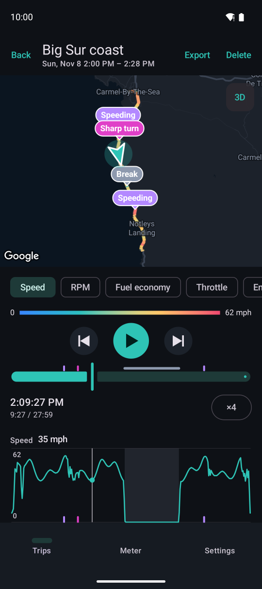
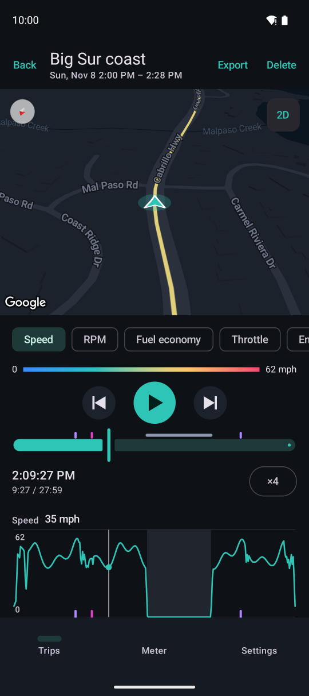
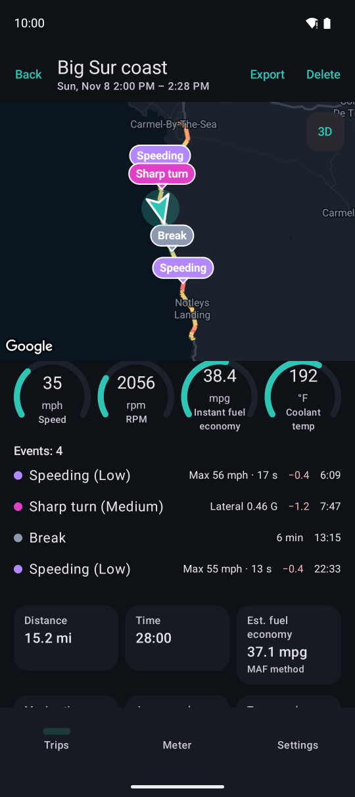
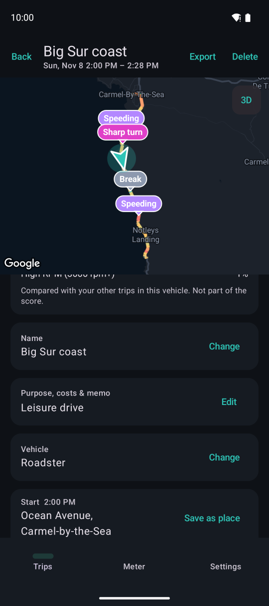
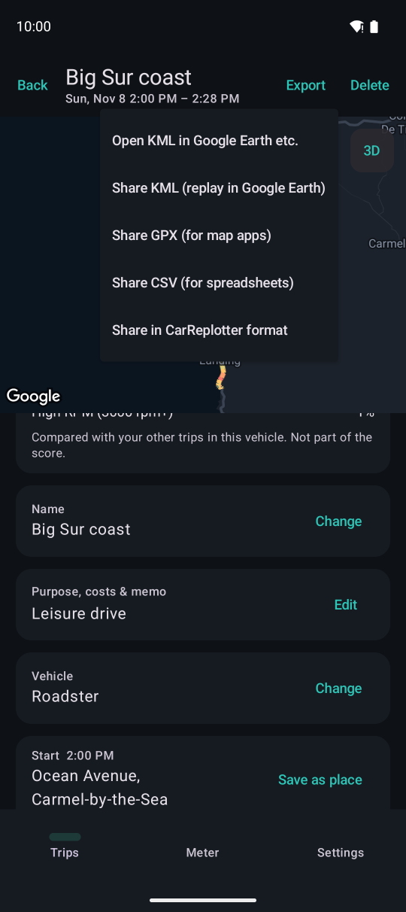

Trip details and replay
Replay a trip on the map and see the speed, RPM, fuel economy and more at each moment.
Map and playback

1234567- 1The route, colored by value. Pins are events (tap for details and to jump there)
- 2Switch to the 3D map
- 3Value for colors and the graph (speed, RPM, fuel economy, throttle, engine load, coolant, altitude)
- 4Play / pause, and previous / next event
- 5Seek bar. Marks above it are events, bands are breaks
- 6Playback speed (each tap: ×1, ×4, ×16, ×60)
- 7Time-series graph. Tap or slide sideways to jump to that time
Coloring and graphs for throttle, engine load, coolant and altitude are Premium features (only values that were recorded appear).

1The 3D map looks down from behind the car, with the direction of travel up. Buildings appear in 3D in cities. Moving the map with your finger stops following the car; playing resumes it.
- 1Back to the top-down map
Dashed sections
- Dashed line: weak GPS signal (tunnels, under roofs, under overpasses). The points before and after are joined with a straight line
- Gray dotted line: GPS was not being recorded (location permission or the device's location was off)
- In both, the car moves along the line at the speed reported by the car during playback (it stays still while the car was stopped)
Values, events and summary

123- 1Values at the playback time
- 2Events: level, strength, deduction and time from the start. Tap to jump there
- 3Distance, time, estimated fuel economy, moving time, average and top speed
Events are hard acceleration, hard braking, sharp turns and speeding (each with low, medium and high levels), plus impacts and breaks. Choose from which level they appear on the map in Settings → Driving events (see Driving score and events).

1234- 1Trip name
- 2Purpose (commute, business, pickup, leisure and more), costs (tolls, fuel and more) and memo
- 3The vehicle (you can change it later)
- 4Start and end. Save them as places
Export and sharing

12“Export” at the top right.
- 1KML (replay in Google Earth), GPX (for mapping apps), CSV (for spreadsheets, a value every second)
- 2CarReplotter format, which others can open and replay in CarReplotter
When sharing in CarReplotter format, you can choose whether to trim the start and end (to keep places such as your home private) and whether to include the memo and costs. The adapter name, VIN and addresses are never included.